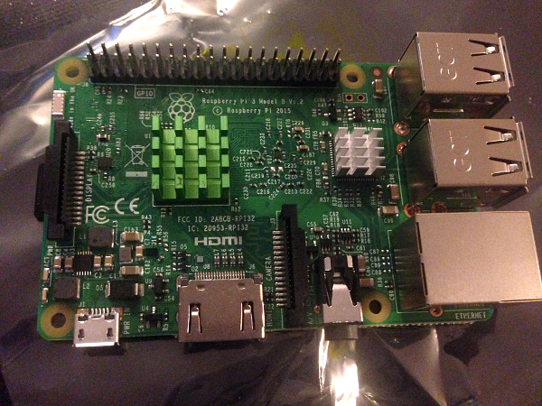

How to use a Raspberry Pi 3 with a Macbook
You have a Raspberry Pi 3 and you don't want to use an extra monitor/keyboard/mouse when you have a Macbook on hand. Good, me neither.
Well, great news: using a Macbook with a Raspberry Pi is very easy.
Here's the list of what I used to do this:
- Raspberry Pi 3 Model B
- Old unibody Macbook
- 32Go class 10 SD micro card + USB adapter
- Ethernet cable
- 5V 3A power supply
- 3 heatsinks
- 1 fan
- a transparent plastic case
You really only need what is bolded.
Now let's get to it.
Setting up your Pi

Start by downloading [Raspbian Stretch with Desktop](https://www.raspberrypi.org/downloads/raspbian/) and also [SD Memory Card Formatter](https://www.sdcard.org/downloads/formatter_4/index.html).
Raspbian might take a bit to download so let's take care of your SD card in the meantime:
Plug it into your Macbook using an adapter, open SD Memory Card Formatter, select your card and click on "Overwrite Format".
Once it's done, you're going to download [Etcher](https://etcher.io/). Etcher will take care of safely flashing your formatted SD card with Raspbian's image.
Once Raspbian is downloaded, you won't even need to unzip it you can just slide the zip file into Etcher, make sure your SD card is selected (should be automatic) and click on Flash!
Now that this is done, you're going to open TextEdit, type anything in it (or nothing at all), simply make sure that you save it using "ssh" as a name, and that you don't save it as a ".txt" file.
Unplug your SD card and plug it back in. It should now be named "boot". Put the "ssh" file you just created in it.
And now it's finally time to start our Pi.
Unplug your SD card again and slide it into your Pi, plug your Ethernet cable from your laptop to your Pi, and lastly: power it up!
You should see red and green lights, now wait a few minutes for your Pi to boot properly. It won't take as long next time.
It's now time to open your console and ping that Pi like this:
$ ping raspberrypi.local
You're gonna see something like this:
PING raspberrypi.local (XX.XXX.XXX.XX): 56 data bytes Request timeout for icmp_seq 0 64 bytes from XX.XXX.XXX.XX: icmp_seq=1 ttl=64 time=1.472 ms 64 bytes from XX.XXX.XXX.XX: icmp_seq=2 ttl=64 time=1.492 ms 64 bytes from XX.XXX.XXX.XX: icmp_seq=3 ttl=64 time=1.547 ms 64 bytes from XX.XXX.XXX.XX: icmp_seq=4 ttl=64 time=1.456 ms
Cancel it with Ctrl + C.
Congratulations, your Pi is here and ready to be used! Grab her IP (numbers in XX.XXX.XXX.XX), and type this:
$ ssh pi@XX.XXX.XXX.XX
Don't forget, your login is pi and the password is raspberry
Do say "yes" when asked Are you sure you want to continue connecting (yes/no)? and welcome to your Raspberry Pi!
Now that you're in the Pi you should now see this:
pi@raspberrypi:~ $
Feel free to explore the configuration using sudo raspi-config
Make sure you enable VNC in the interface menu.
Using your Macbook
You now need to download [VNC Viewer](https://www.realvnc.com/en/connect/download/viewer/) on your laptop.
Open it, enter your Pi's IP address and... That's it. You now have access to the Pi's graphical interface on your Macbook.
Commentaires